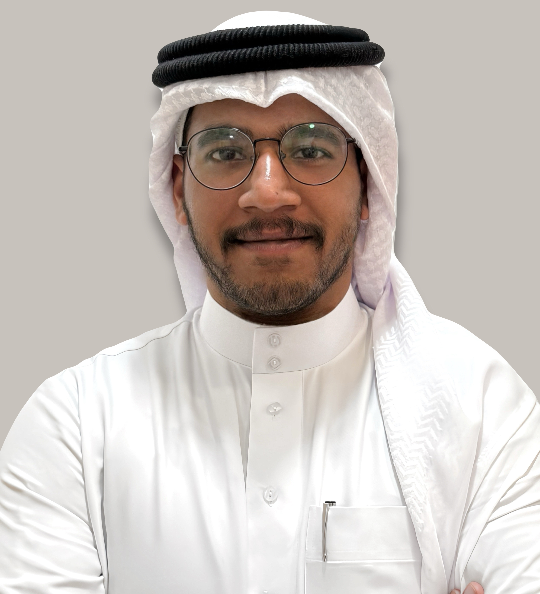

Open to AI Engineering roles
Salman Sheikh
AI Engineer · Bahrain · 23
AI Engineer with experience spanning LLMs, RAG, NLP, computer vision, embedded AI, robotics, generative AI, document automation, cloud infrastructure, and AI agents.
I'm a 23-year-old AI engineer who likes building things that actually ship — from a Bahraini-dialect LLM with a code sandbox, to a sign-language glove that runs entirely offline on a microcontroller. I've led small engineering teams, deployed production systems for government and institutional clients, and picked up a few national awards along the way. Below is a full breakdown of that work, organized by where it was built.

$
Core expertise
Competitions, mentorship & industry activity
Judging, mentoring, and representing teams outside of day-to-day engineering work.
Let's build something worth shipping.
I'm currently looking for AI engineering roles where I can work on LLMs, agents, and production ML systems end to end. Reach out — I reply fast.